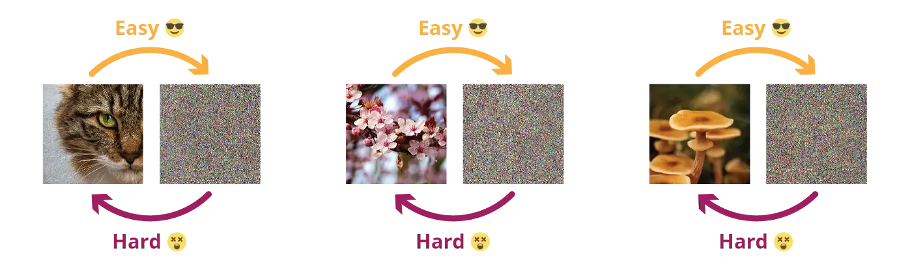
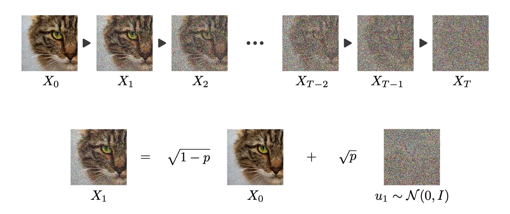

Diffusion Probabilistic Models
Diffusion Probabilistic models
Generative modeling is about learning a mapping function from a simple probability distribution (e.g. normal) to a complex one (images).

VAE and GAN generators transform simple Gaussian noise to complex distributions:


Destroying information is easier than creating it.

Stochastic processes can destroy information. Iteratively adding normal noise to a signal creates a stochastic differential equation (SDE).
X_t = \sqrt{1 - p} \, X_{t-1} + \sqrt{p} \, \sigma \qquad\qquad \text{where} \qquad\qquad \sigma \sim \mathcal{N}(0, 1)
Under some conditions, any probability distribution converges to a normal distribution.

A diffusion process can therefore iteratively destruct all information in an image through a Markov chain.

It should be possible to reverse each diffusion step by removing the noise using a form of denoising autoencoder.

We will not get into details, but learning the reverse diffusion step implies Bayesian inference, KL divergence and so on. As we have the images at t and t+1, it should be possible to learn, right?


Dall-e
Dall-e is a very famous text-to-image generative model. See https://openai.com/dall-e-2/.

CLIP: Contrastive Language-Image Pre-training
Embeddings for text and images are learned using Transformer encoders and contrastive learning.
For each pair (text, image) in the training set, their representation should be made similar, while being different from the others.
GLIDE
GLIDE is a reverse diffusion process conditioned on the encoding of an image.

Dall-e
A prior network learns to map text embeddings into image embeddings:
Complete Dall-e architecture: